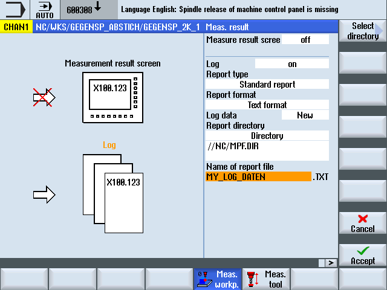
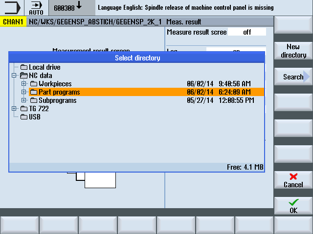

Function
The activation of the logging function is performed by simply programming the CYCLE150 call. The result display and logging can be selected separately and can be controlled independently. Parameters in CYCLE150 have a modal effect until the end of the program or reset, or until the cycle is called again.
Procedure
The logging is activated and deactivated via the program through the appropriate parameterization of CYCLE150. This must be programmed once at the start of the measuring program. Only when the input parameters are changed must the programming be performed again before the respective measuring cycle call. At the end of the program (channel RESET), the functions are deactivated automatically, explicit programming is not required.
The part program or ShopMill program to be processed has been created and you are in the editor.
The screen form contains a selection field for activating and deactivating the measurement result display with the toggle states "Off"/"On". It also contains a selection field for activating and deactivating the logging with the toggle states "Off"/"On"/"Last measurement".
If both selections fields have the toggle state "Off", all the following input fields for the respective function are hidden.
Parameter
Parameter | Description |
|---|---|
Measurement result display | Off/On |
Display mode | autom. 8 s / NC start / for alarm |
Log | |
Log type | Standard log / User log |
Log format (for standard) | Text format / Tabular format (file extension TXT/CSV) |
Log data | New/Append |
Log storage | Directory / As part program / Variable |
Name of log file | File type set according to selection of log format |
Log type
The existing infrastructure for the logging of the measurement results should also be made accessible to users for their own purposes - output of user logs. A distinction is therefore made between the standard log and the user log.
Log format
Standard logs can be output in two log formats, in text format and in tabular format. The text format is based on the display of the measurement results on the screen. The tabular format is a format that can be imported by Excel (or other spreadsheet programs). This allows the measurement result logs to be statistically processed.
The Text format / Tabular format selection is only available for standard logs. With user logs, the user is responsible for the formatting, i.e. the selection field is hidden for the user log.
Log data
A new log file can be created or an existing file appended. This is selected via Log data "New" or "Append". With "New", the existing file with the same name is deleted and a new file created during logging.
Log storage
The path can be specified explicitly or implicitly for the log storage, i.e. "Directory", "As part program" or "Variable" can be selected.
With "As part program", the path of the higher-level NC program is automatically determined by the logging cycles and the log file is stored there. The following input field for the path is hidden. With "Directory", there is an additional input field in which the path is entered. The path does not have to be entered, it can be selected via a dialog which is opened via the additional VSK1 "Select directory".
The name of the variable is entered for "Variable" in the following field. The name of the log file is then programmed via this variable. It is possible, but not necessary, to specify a path. The log file is then located in the same path as the higher-level NC program.
Entry level in the selection dialog for log storage
This softkey "Select directory" only appears when "Directory" is set in the Log storage selection field.
Selection dialog for log storage
All drives and paths available in the program manager can be selected.
Local drive
NC data (part program memory)
Network drive(s), if connected
USB (if available)
Only a path or an available file can be selected in the dialog.
If only a path is selected, the selection with the complete path is transferred to the screen form with the Accept softkey, but can be changed. The name of the log file is entered. If a file is selected, the full path and file name are transferred to the screen form, but can be changed.
Alternatively, the storage location can be entered.
Examples of the selected storage location:
NC data -> Workpiece -> Workpiece "Logs"
//NC:/WKS.DIR/PROTOKOLLE.WPDNetwork drive logs
//d:/LogsUSB -> measuring_cycle_logs
//USB:/01/measuring_cycle_logs
Name of log file
The log file name can be freely selected. It must comply with the rules for program names in the NC, or for program names when writing to external drives.
File type
The following file types are supported:
Text file - type TXT
Tabular format – type CSV
These file types depend on the selected log format.
The file type cannot be changed, it is only displayed.